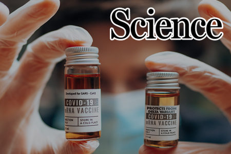

서울대뉴스
 관악에 울려 퍼지는 봄의 록 스피릿: 관악 AMP UP을 만나다
서울대학교 최초의 공식 록 페스티벌 ‘관악 AMP UP’이 1일(화)부터 2일(수)까지
양일간 관악캠퍼스 버들골 풍산마당에서 열렸다.
관악에 울려 퍼지는 봄의 록 스피릿: 관악 AMP UP을 만나다
서울대학교 최초의 공식 록 페스티벌 ‘관악 AMP UP’이 1일(화)부터 2일(수)까지
양일간 관악캠퍼스 버들골 풍산마당에서 열렸다.
서울대뉴스
 서울대, 국제특허출원 대학 순위 세계 5위 기록
서울대학교가 세계지식재산기구(WIPO)가 최근 발표한 2024년
국제특허출원(PCT, Patent Cooperation Treaty) 대학 순위에서 세계 5위를 차지했다.
서울대, 국제특허출원 대학 순위 세계 5위 기록
서울대학교가 세계지식재산기구(WIPO)가 최근 발표한 2024년
국제특허출원(PCT, Patent Cooperation Treaty) 대학 순위에서 세계 5위를 차지했다.
연구성과

mRNA 백신 작동원리 세계 최초 규명
새로운 치료 플랫폼으로 주목받고 있는 mRNA 백신을 더욱 효과적이고 안정적으로
개발할 수 있는 실마리를 생명과학부 김빛내리 석좌교수 연구팀이 밝혀냈다.
서울대뉴스
 숲을 위한 작은 실천, 학생들이 만든 ‘푸른 상점’
경북 의성에서 발생해 강풍을 타고 확산된 산불의 피해 복구를 돕기
위한 ‘FO:RESTORE, 숲을 되살리는 푸른 상점’ 캠페인이 지난 10일과 11일 문화관 중강당
앞에서 열렸다.
숲을 위한 작은 실천, 학생들이 만든 ‘푸른 상점’
경북 의성에서 발생해 강풍을 타고 확산된 산불의 피해 복구를 돕기
위한 ‘FO:RESTORE, 숲을 되살리는 푸른 상점’ 캠페인이 지난 10일과 11일 문화관 중강당
앞에서 열렸다.
연구성과
장기적 규칙적 운동의 인간 뇌 글림파틱 및 뇌수막 림프관 흐름 촉진
첨단융합학부 최승홍 교수와 체육교육과 김유겸 교수 공동
연구팀이 장기간 규칙적 유산소 운동이 글림파틱 흐름과 뇌막 림프관 기능을
강화하여 치매 위험을 잠재적으로 낮출 수 있다고 밝혔다.
서울대뉴스
어둠 속에서 답을 찾다, 암적응(暗適應)
4일(금)부터 7일(월)까지 68동 제1파워플랜트에서는
아마추어천문회 AAA(Amateur Astronomy Association 이하 AAA)가 기획한
암적응(暗適應) 전시가 진행되었다.
서울대뉴스
더 나은 학교를 위한 대화, 총장과 논하는 서울대학교 복지의 오늘
지난 3일 ‘서울대학교의 복지’를 주제로 'on The
Lounge : 총장과의 대화’가 SNU Commons 중앙도서관 1층에서 열렸다.
연구성과
바다의 역할 변화...급격한 탄소 흡수 약화, 기후 위기 더 커질 수도
지구환경과학부 국종성 교수팀이 점진적인 기후변화
상황에서도 북대서양에서는 일정 임계점을 지나면 탄소 흡수 능력이 급격히
약화되는 현상을 확인했다고 밝혔다.